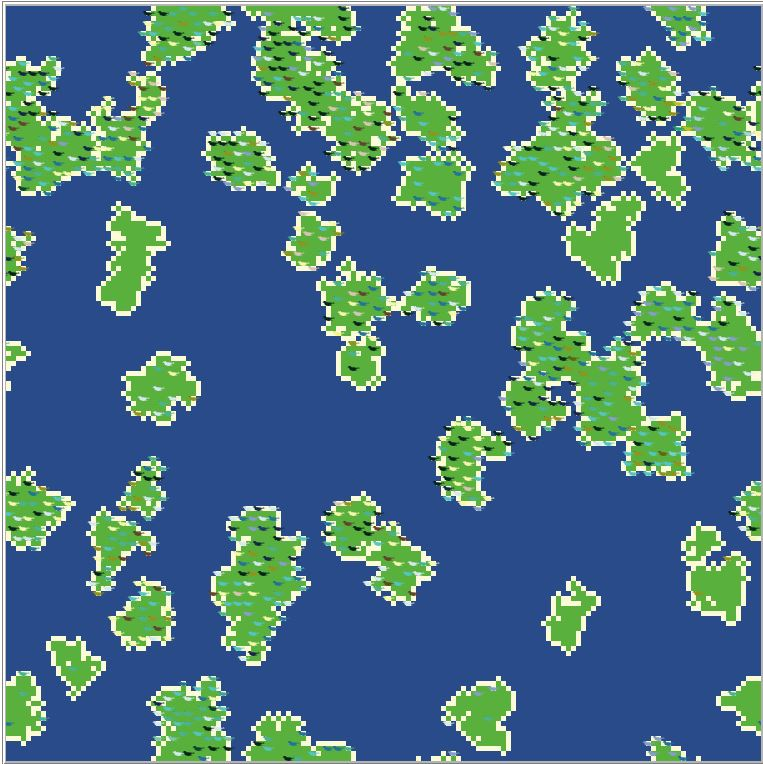
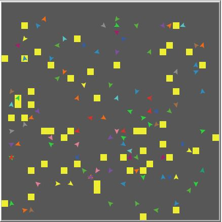

Example Models
Click one of the pictures below to check out its accompanying model online or to download the Netlogo code.
This is the first Netlogo model I made. The shark will swim back and forth and try to eat birds. If it eats enough, the shark becomes sated and dives to a lower depth until it is hungry again. Meanwhile, birds sometimes sink to the ocean floor where they can be eaten by octopi. Note that this model runs very slowly in the browser window- you should download the model to actually run it.

I made this simple model of genetic drift. Birds spawn on random landscapes and breed, transmitting their color to their offspring, which then disperse if there is available territory. There is a slight chance for colour mutation, but islands with high-connectivity tend to drift towards colour homogeneity. The more the landscape is broken up into individual islands, the more likely it is that there will be a variety of bird colours. This is almost guaranteed not to work in-browser- download the model file to see the colours change over generations.

This is a simple nesting model that I made to answer a question by Melimel. where agents move randomly through the landscape until they bump into any other turtle. Once that happens, the pair goes to a an unoccupied nest, represented by yellow patches.
A snake-inspired model in which agents move around the landscape until they get stuck on a "tail" or until all food circles have been eaten.